案例列表
所有案例
跨足共享移動、智慧醫療與多種企業級系統，
我擅長在不同的專案限制下，
快速釐清並重構複雜的核心工作流。

智慧移動｜在實務限制下完整執行服務設計流程，推動創新提案落地實際上線
GoSmart-共享車 創新服務設計
在既有業務與技術限制下執行完整設計流程。提出10大創新服務提案且過半實際上線，成功優化核心租借體驗。
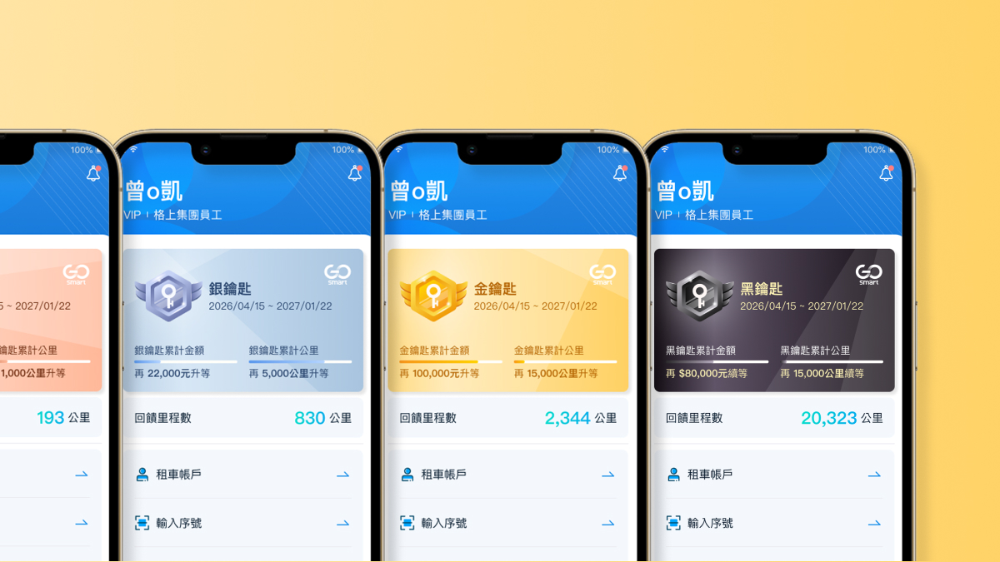
智慧移動｜建構高擴展性視覺規範，統一多端會員體驗
GoSmart-會員與視覺元件系統
統一多端產品的視覺語言，為會員系統建構具高擴展性與一致性的設計系統。
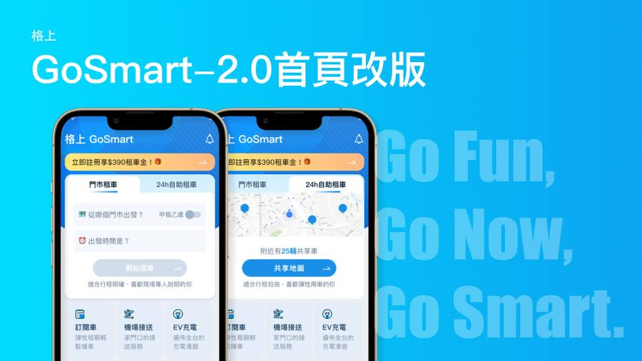
智慧移動｜重構首頁資訊架構，創造高效且直覺的全新租車體驗
GoSmart-2.0首頁改版
全面重構首頁資訊架構，為大眾用戶帶來直覺的操作體驗，大幅提升日常租車效率。
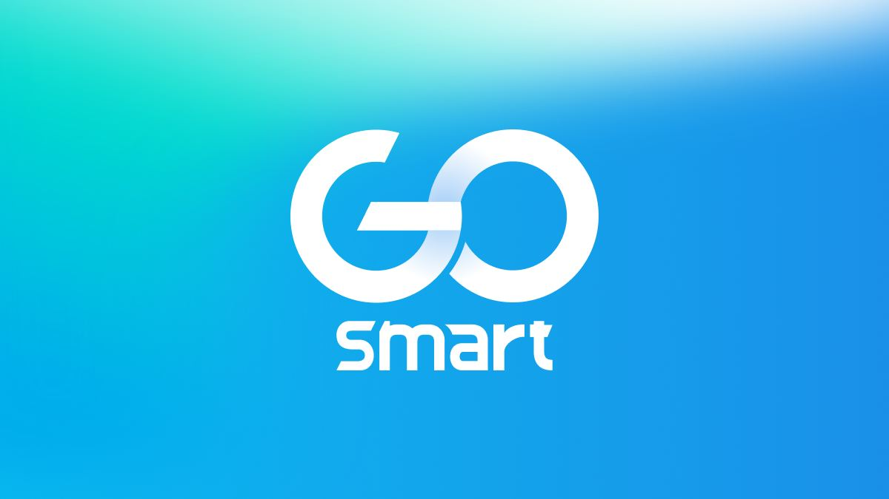
Logo設計｜建構系統化品牌視覺語彙，傳達共享移動核心價值
GoSmart-Logo & 品牌設計
重塑品牌核心視覺識別，打造具一致性、高識別度與系統化的品牌視覺語言。
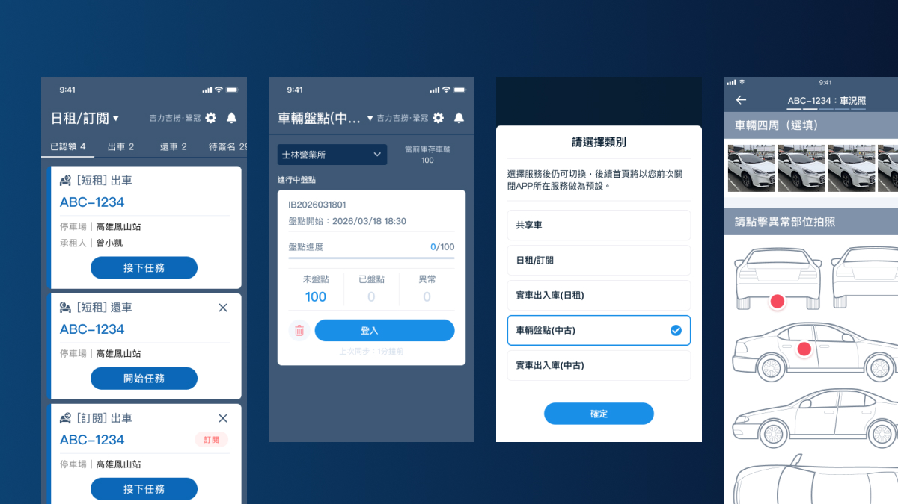
智慧移動｜導入任務導向調度邏輯，建構高擴充性的企業維運系統
神馬維運-企業級營業車輛調度管理 APP
針對營業同仁調度流程導入「任務化」邏輯，打造具備高度可擴充性的專業企業級管理工具。
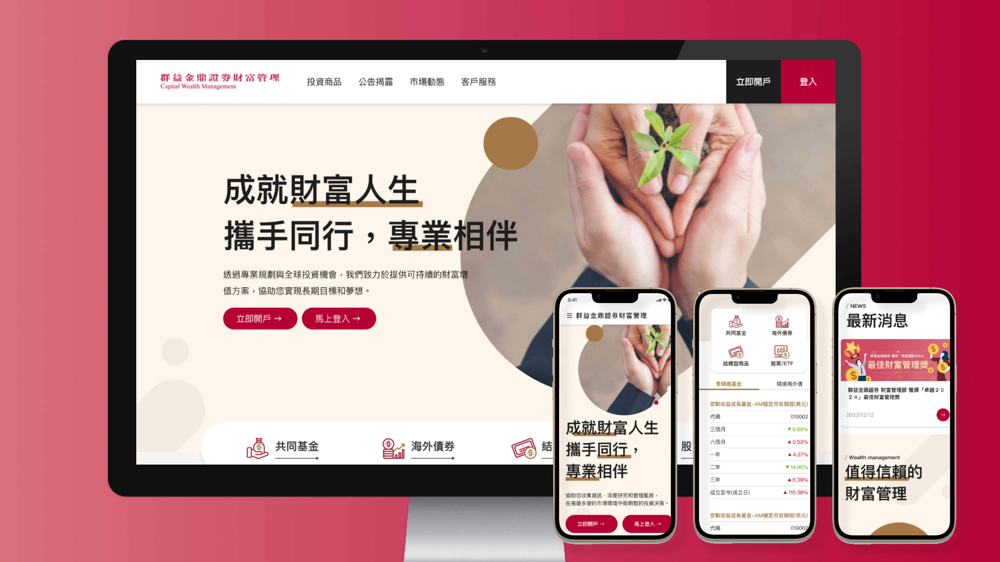
金融科技｜在限制下兼顧管理與設計，重組功能架構以建立專業信任感
群益證券-財富管理部 官方網站改版
在既有框架限制下兼顧專案管理與設計，重構官方網站功能架構，建立專業且具信任感的品牌形象。

新聞媒體｜順應大眾數位閱聽習慣，在密集資訊中開創流暢動線
TVBS-數位新聞媒體 改版提案
順應大眾數位閱聽習慣，在密集的新聞資訊中開創流暢動線，規劃符合當前閱讀習慣的數位體驗。
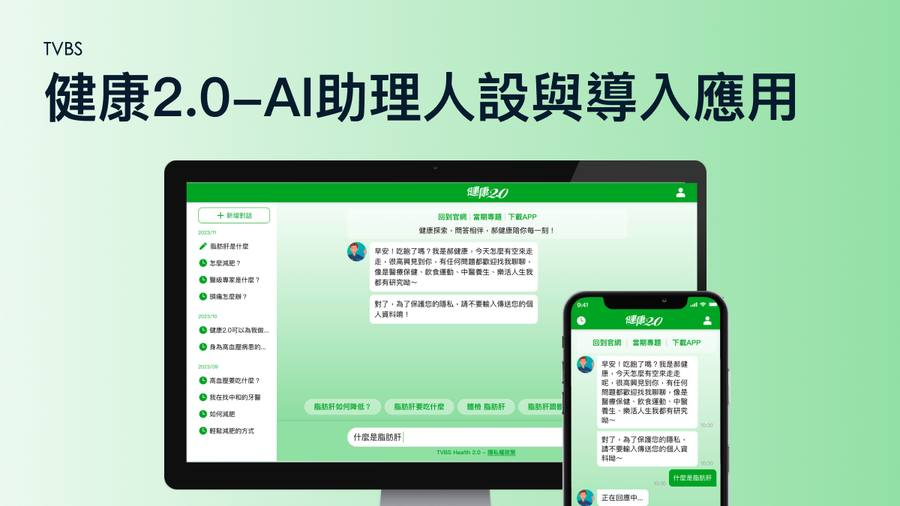
醫療科技｜打造具親和力的AI互動體驗，將智慧輔助無縫融入衛教服務
TVBS 健康2.0-AI助理人設與導入應用
定義AI助理角色定位與視覺風格，梳理用戶互動對話動線，成功將AI智慧輔助導入大眾健康服務。
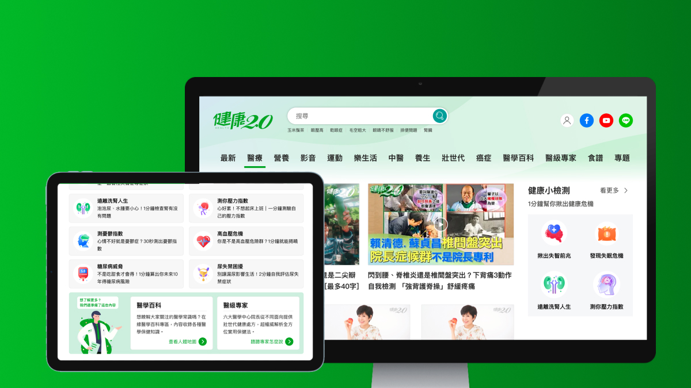
醫療科技｜重構健康資訊檢索路徑，打造兼具權威與易讀性的衛教門戶
TVBS 健康2.0-官方網站 改版提案
針對大眾健康衛教需求重構資訊架構與視覺層級，提升內容搜尋效率，打造清晰流暢的閱讀體驗。
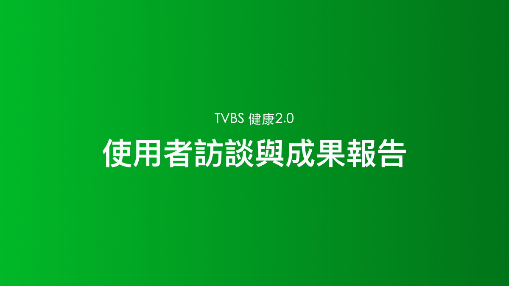
醫療科技｜洞察大眾健康資訊痛點，以質性研究驗證產品改版方向
TVBS 健康2.0-使用者訪談與成果報告
透過使用者訪談與行為觀察，深入剖析用戶健康資訊搜尋痛點，為產品迭代提供嚴谨數據與設計建議。
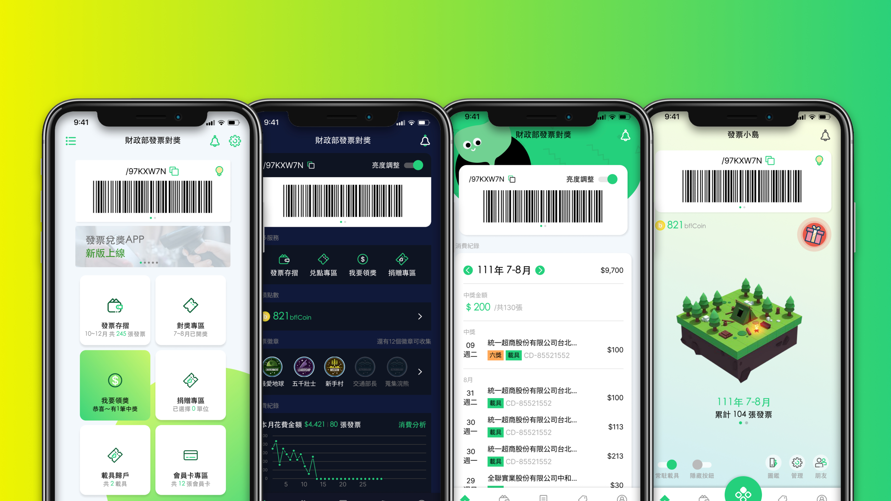
生活服務｜突破嚴苛開發時程，高效完成工具介面風格重塑
遊戲橘子-發票載具 風格提案
突破嚴苛的開發時程限制，為發票載具工具進行高效的介面視覺重塑與風格提案。
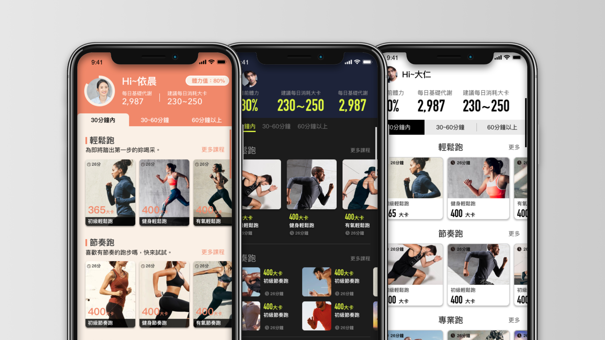
醫療科技｜結合生理監測與初階跑者痛點，打造具引導感的運動習慣
博晶醫電-AIoT運動APP 風格提案
將生理監測結合初階跑者痛點，打造具引導感的介面，陪伴用戶建立運動習慣並看見自我進步。
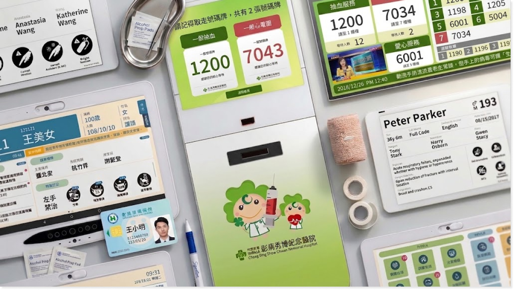
醫療科技｜跨越病患與醫護雙端範疇，在嚴謹語境下提煉多款產品設計最適解
佳綸生技-智慧醫療相關產品
精選多款醫療產品合集，涵蓋一般病患與專業醫護雙端用戶，完美平衡醫學嚴謹度與易用性。
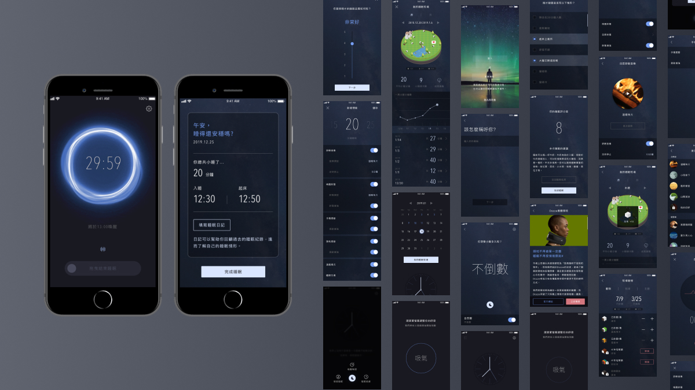
醫療科技｜跨界協作硬體團隊，獨立規劃線上產品核心功能與亮點
Dozze-軟硬整合智能睡眠 APP
與硬體團隊跨界協作，獨立承擔專案管理，自主規劃線上產品核心功能與亮點，展現獨立推進實力。
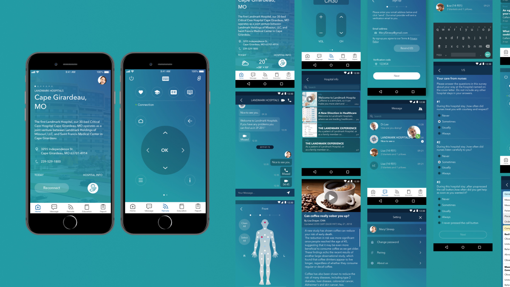
醫療科技｜整合多端平台與智慧硬體控制，重塑全方位的智慧病房體驗
睿能-SmartTV 智慧醫院APP
整合醫院介紹與醫病溝通平台，並無縫串接病房智慧電視控制功能，打造全方位智慧病房體驗。
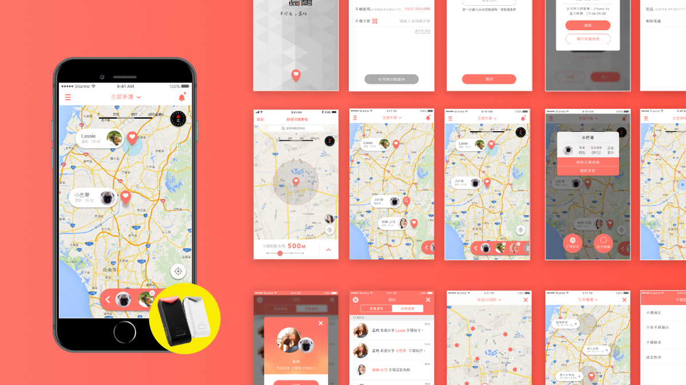
IOT｜梳理實體定位裝置之複雜邏輯，以清晰架構重塑軟硬整合體驗
遠傳 Bobee-隨身定位裝置與防丟 APP
配合大公司實體定位裝置規劃專屬App，梳理複雜的硬體運作邏輯，並以清晰架構呈現數位資訊。
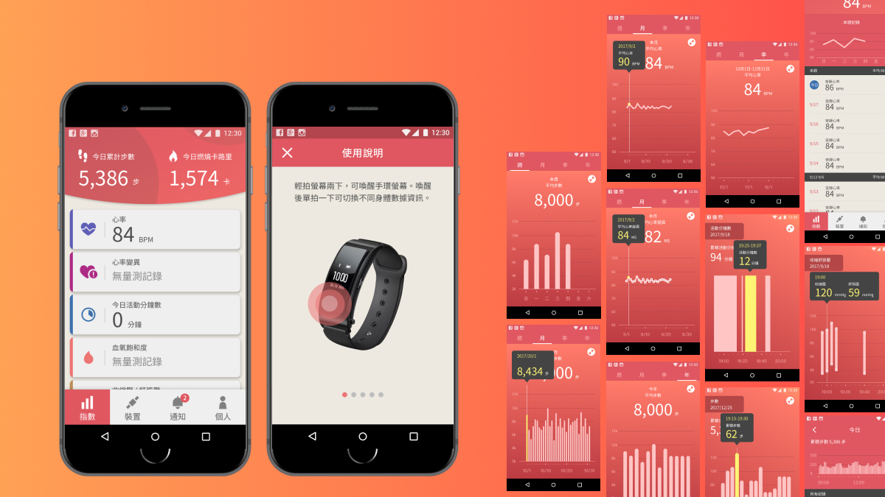
醫療科技｜協同新創敏捷推進，將專業醫療監測數據轉化為大眾直覺圖表體驗
歐豆 -心律手環智能監測 APP
與新創團隊緊密協作，將晦澀的醫療監測數據轉化為大眾可理解的視覺化圖表與直覺操作體驗。
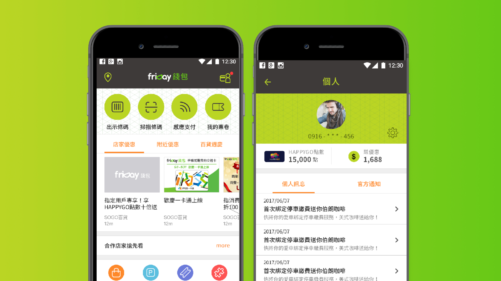
金融科技｜立足行動支付未明時代，運用嚴謹設計方法引導客戶開創「擬物化數位錢包」體驗
遠傳 friDay-行動數位錢包 APP
在行動支付概念尚不完整的初期，提出以實體錢包收納卡片的直覺意象，運用嚴謹設計方法引導客戶探索最適解。
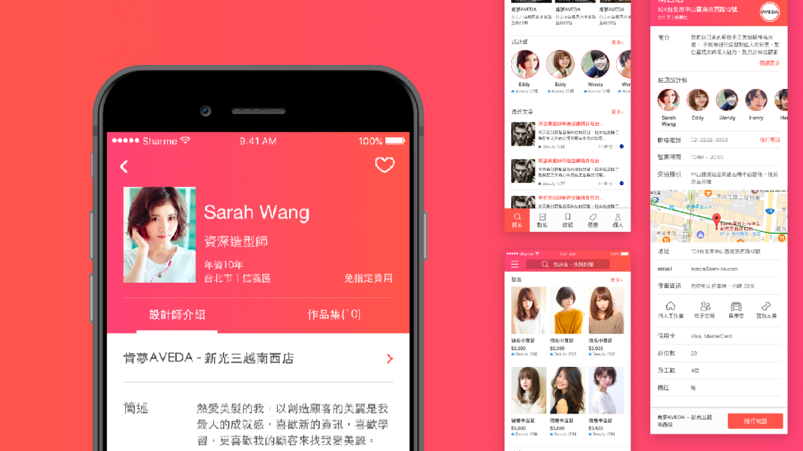
生活服務｜簡化雙端媒合資訊架構，優化預約細節以提升訂單轉換率
Beauty-美容美髮設計師媒合APP
重新規劃消費者與美髮設計師的雙端媒合預約橋樑，簡化資訊架構以提升訂單轉換率。
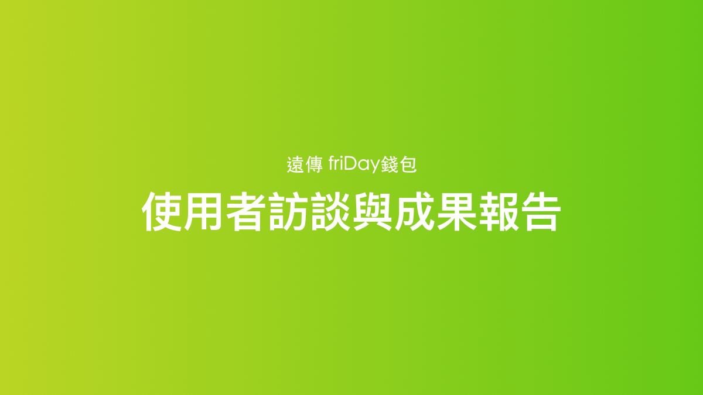
金融科技｜挖掘早期使用者支付障礙，以數據與質性觀點收斂產品優化策略
遠傳 friDay錢包-使用者訪談與成果報告
針對早期行動支付使用者執行深度訪談，釐清卡片綁定與支付情境痛點，為後續產品迭代提供實證依據。
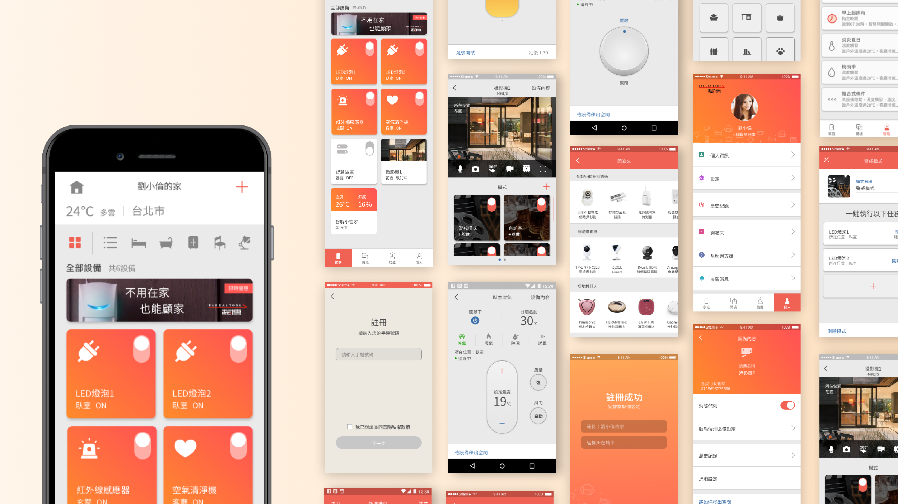
IOT｜建構異質裝置之一致性控制語彙，梳理跨設備自動化與群組聯動邏輯
遠傳 智慧家庭-IOT 裝置控制平台
為冷氣、開關等異質硬體設計一致性控制介面，並深度梳理排程與群組開關等跨裝置自動化互動邏輯。
生活服務｜重塑官方網站視覺識別，打造跨數位介面之一致性體驗
中華電信-官方網站響應式體驗改版
重塑官方網站視覺識別系統，打造跨數位介面、符合響應式規範的一致性數位體驗。
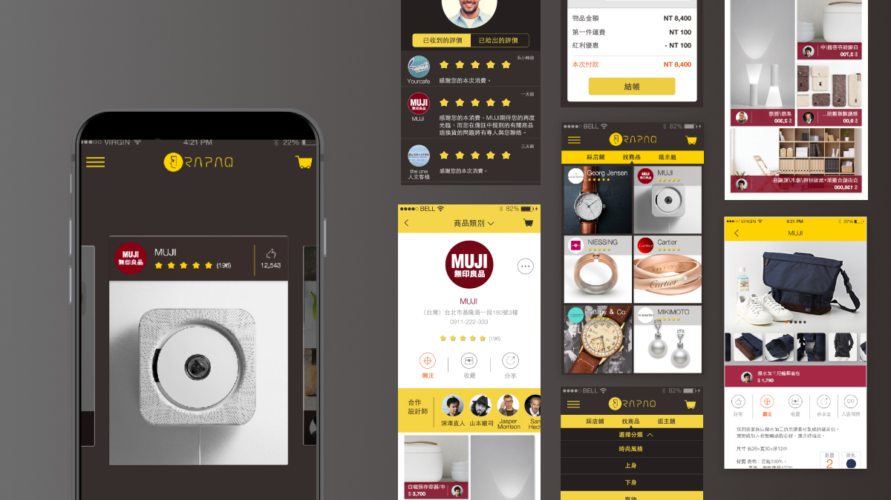
生活服務｜針對行動端使用者習慣重新規劃動線，移除多餘認知阻礙
愛魅客-電商APP
針對行動端使用者習慣，重新規劃購物車與結帳操作動線，有效移除多餘的認知阻礙。
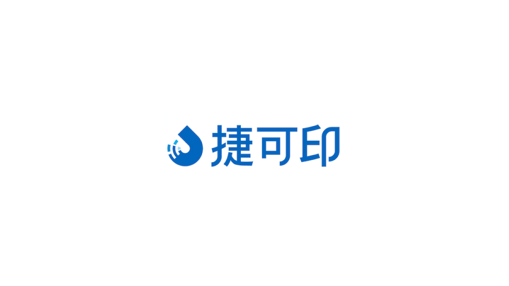
Logo設計｜將快捷效率價值符號化，為印刷電商重塑系統化設計
捷可印-Logo & 品牌設計
將快捷、精準的核心價值符號化，為傳統印刷電商重塑清晰且系統化的視覺品牌語言。
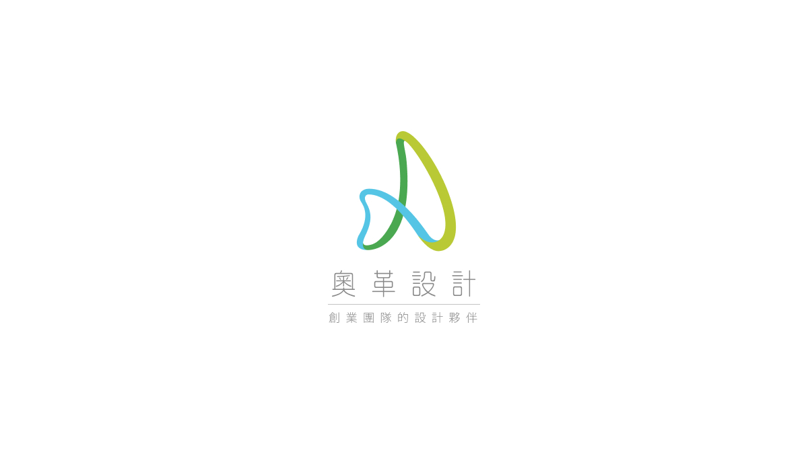
Logo設計｜運用理性空間幾何設計，為專業團隊打造前瞻性識別
奧革設計-Logo & 品牌設計
透過高度理性的幾何與空間感設計，為專業設計團隊打造具前瞻性與辨識度的品牌識別。
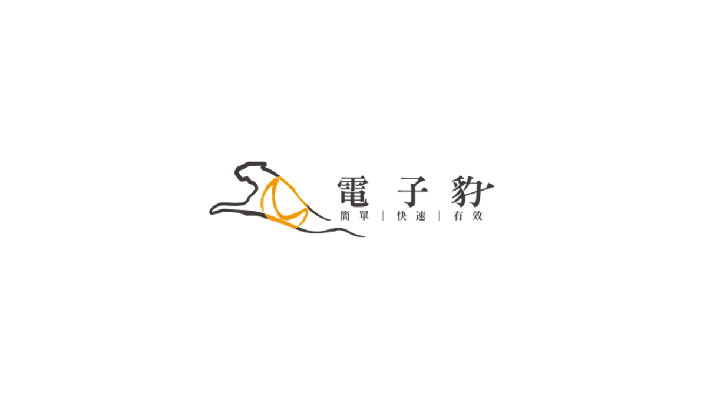
Logo設計｜精準轉化郵件觸及效率，重塑高速度感的企業品牌語言
電子豹-Logo & 品牌設計
將郵件精準觸及的「速度感」與「高效率」融入標誌設計，協助完成企業品牌識別轉型。
此分類目前尚無作品。